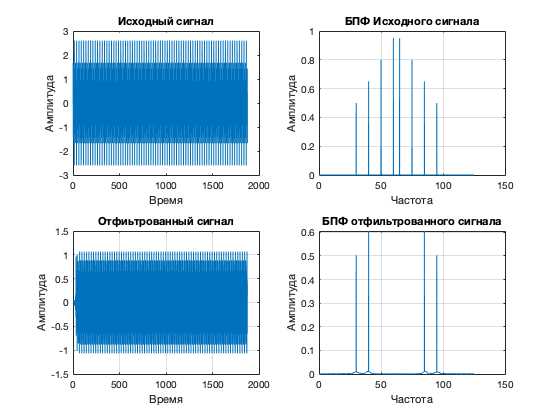

function Hd = FIR1
Fs = 125;
Fpass = 40;
Fstop = 45;
Dpass = 0.057501127785;
Dstop = 0.0001;
dens = 20;
[N, Fo, Ao, W] = firpmord([Fpass, Fstop]/(Fs/2), [1 0], [Dpass, Dstop]);
b = firpm(N, Fo, Ao, W, {dens});
Hd = dfilt.dffir(b);
Ts = 0 : 1/Fs : 15 - 1/Fs;
N = length(Ts);
f1 = 30;
f2 = 40;
f3 = 50;
f4 = 60;
x = 0.5*sin(2*pi*f1*Ts) + ...
0.65*sin(2*pi*f2*Ts) + ...
0.8*sin(2*pi*f3*Ts) + ...
0.95*sin(2*pi*f4*Ts);
subplot(2, 2, 1);
plot(x); hold on; title('Исходный сигнал');
xlabel('Время'); ylabel('Амплитуда');
X = abs(fft(x));
Xm = 2*abs(X)/N;
X = (0: N - 1) * Fs / N;
subplot(2, 2, 2);
plot(X, Xm); grid on; title('БПФ Исходного сигнала');
xlabel('Частота'); ylabel('Амплитуда');
y = filter(Hd, x);
X = abs(fft(y));
subplot(2, 2, 3);
plot(y); grid on; title('Отфиьтрованный сигнал');
xlabel('Время'); ylabel('Амплитуда');
Xm = 2 * abs(X) / N;
X = (0: N - 1) * Fs / N;
subplot(2, 2, 4);
plot(X, Xm); grid on; title('БПФ отфильтрованного сигнала');
xlabel('Частота'); ylabel('Амплитуда');
ans =
FilterStructure: 'Direct-Form FIR'
Arithmetic: 'double'
Numerator: [1x64 double]
PersistentMemory: false
